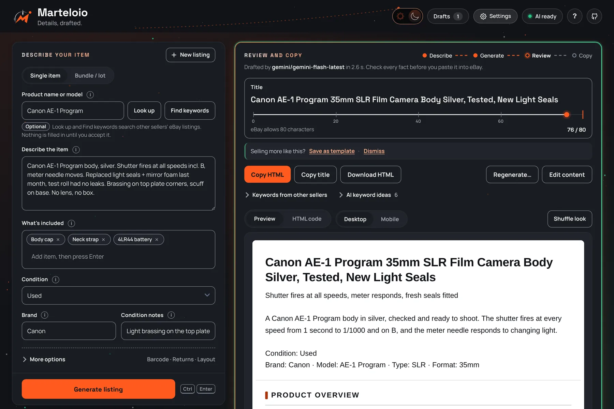
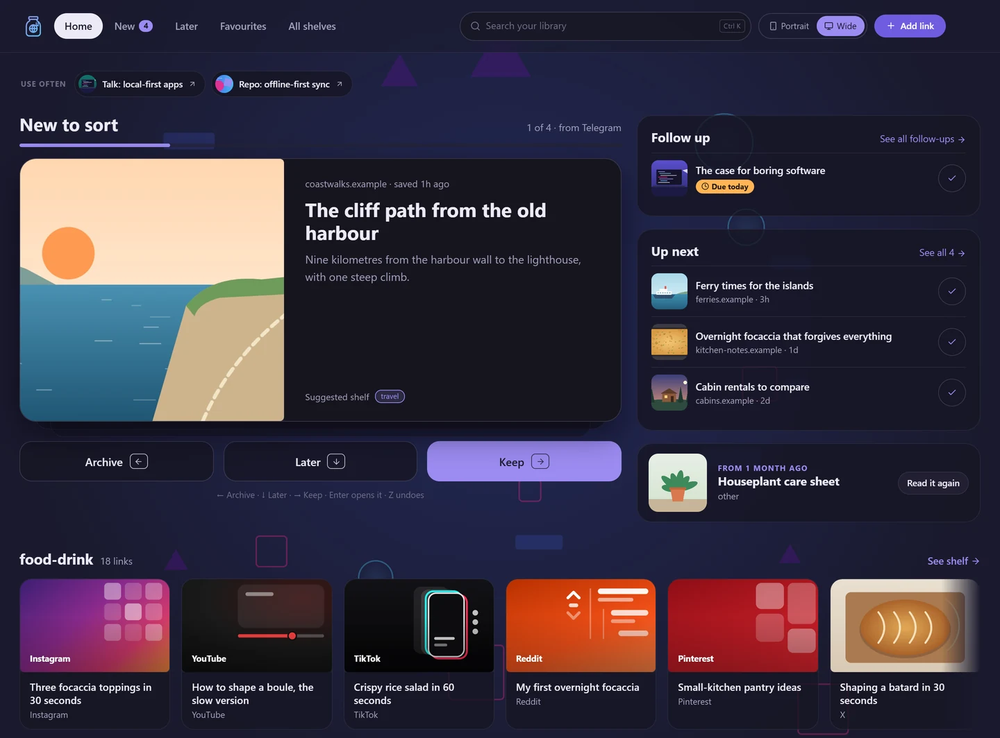
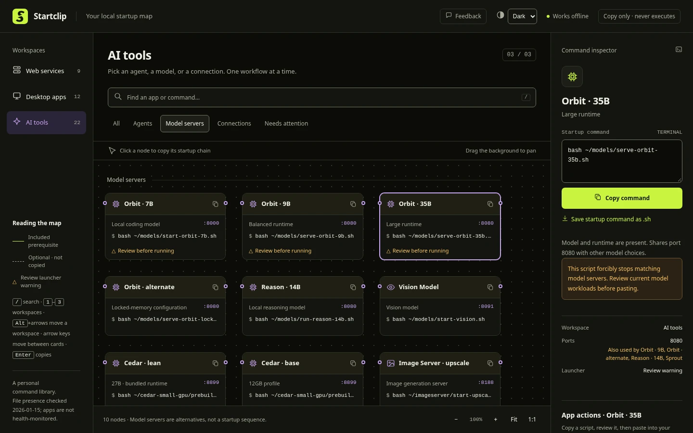

Marteloio eBay listing generator
Type your notes about an item and get an eBay title, item specifics and an HTML description to paste in. It works with free AI keys, and every fact stays yours to check.
Free and open source. Windows 10 and 11.

Watch the tourLoads when you press playSuperBookmarks Local bookmark manager for Windows
One library for browser bookmarks, Telegram and WhatsApp links and the posts you save from X, Instagram and TikTok. It keeps an offline copy of every page, so a link still opens after the site is gone.
Free and open source. Windows 10 and 11.

Watch the tourLoads when you press playStartclip Offline start-command dashboard
One HTML file that maps the apps on your own machine: Docker stacks, local model servers and AI agents. Click a card and its start command is copied. Nothing runs.
Free and open source. Any modern browser, with shortcuts for Linux and Windows.

Watch the tourLoads when you press play